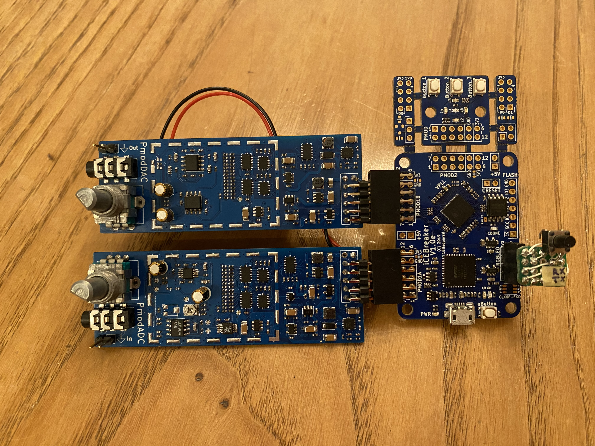

PmodADC
 A fully discrete 14bit, 41kHz, FPGA-controlled Successive-Approximation Audio ADC and R2R Audio DAC.... more details
psMCU
 An 8-bit, 1MHz processor built from individual logic and memory ICs, featuring a custom ISA, peripheral interface,
USB programmer and assembler software.
An 8-bit, 1MHz processor built from individual logic and memory ICs, featuring a custom ISA, peripheral interface,
USB programmer and assembler software.
... more details